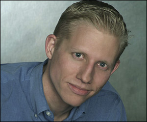

All About Us :: Biographies Derek Lauber, Associate As a coach, Derek Lauber is a commitment to creating awareness, opening possibilities, and achieving results for his clients. Derek's corporate and academic success reflects that same commitment to himself. He has served in management and leadership roles within the finance (electronic trading) industry for over six years. In addition to coaching, he is currently the Director of Infrastructure for a fast growing, cutting-edge electronic market-making firm. Derek has a B.A. from the University of Illinois and an Executive Leadership Coaching Certificate from Georgetown University. His coaching approach and philosophy is holistic; thereby, challenging you mentally, physically, and spiritually to overcome your limitations and move you towards your goals. When not coaching, he spends his days in the mountains; mountain biking, skiing, or hiking. |